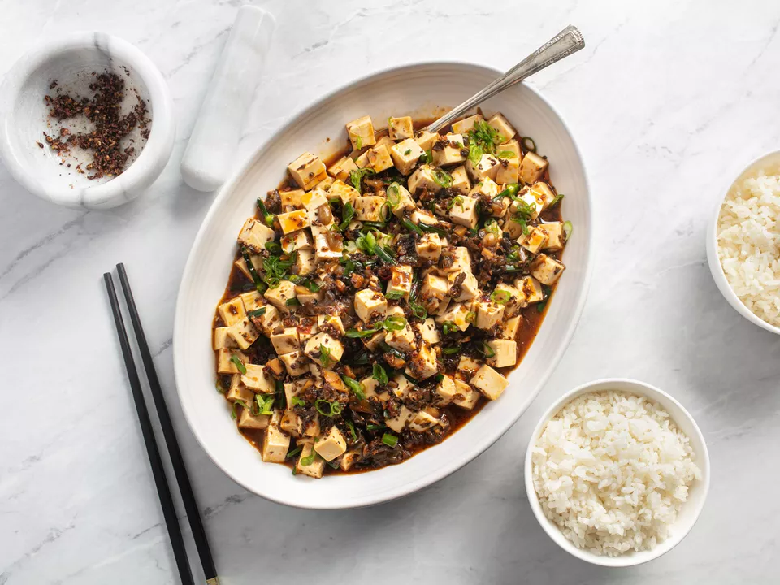

Mapo Tofu

A classic Sichuan dish made vegan
This one of my favorite dishes. The flavors are intense, and the sichuan peppercorns make for an interesting sensation in your mouth
Ingredients
- 4 whole dried woodear mushrooms (about 1/6 ounce)
- 1/4 ounce dried morel or porcini mushrooms, or a mix
- 1 (2-inch) piece of kombu (optional, see note)
- 1 1/2 cups boiling water
- 6 ounces white button mushrooms, stems trimmed, quartered
- 1/3 cup vegetable oil
- 1 teaspoon cornstarch
- 2 tablespoons Shaoxing wine (see note)
- 1 tablespoon dark soy sauce
- 2 tablespoons whole Sichuan peppercorns, divided (see note)
- 2 tablespoons Sichuan peppercorns, one tablespoon left whole, the other toasted and ground in a spice grinder or mortar and pestle
- 2 whole dried chinese hot chilies
- 3 garlic cloves grated on a microplane grater
- 1 tablespoon fresh ginger grated on a microplane grater
- 4 scallions, whites finely chopped, greens thinly sliced, reserved separately
- 12 chinese chives or regular chives cut into 1/2-inch segments
- 3 tablespoons minced yacai (Chinese preserved mustard root, see note, optional)
- 2 tablespoons fermented chili broad bean paste (see note)
- 2 tablespoons roasted chili oil (see note)
- 1 1/2 pounds medium to firm silken tofu, cut into 1/2-inch cubes
Directions
- Combine dried mushrooms and kombu (if using) in a small bowl or liquid measuring cup and cover with water. Place a paper towel or kitchen towel directly on surface of water to keep mushrooms mostly submerged. Set aside for ten minutes to rehydrate.
- Meanwhile, place button mushrooms in the bowl of a food processor and pulse until chopped into rough 1/4-inch pieces, about 6 to 8 one-second pulses. Combine chopped button mushrooms and oil in the bottom of a large wok. Heat over high heat, stirring constantly, until mushrooms are shriveled and well browned, 6 to 10 minutes. Strain through a fine mesh strainer set over a small saucepan. Transfer fried mushrooms to a medium bowl and return oil to wok.
- When dried mushrooms are rehydrated, strain through a fine mesh strainer set over a small bowl. Discard kombu. Discard all but 3/4 cups soaking liquid. Add cornstarch, wine, and soy sauce to liquid. Transfer drained mushrooms to a cutting board. Remove and discard hard central stems from woodear mushrooms, then finely chope all the mushrooms. Add to bowl with fried mushrooms.
- Add whole Sichuan peppercorns and both chilis to oil in wok and return to high heat. Cook until fragrant and peppercorns have stopped sputtering. Do not overcook, or they will burn. Immediately strain through a fine mesh strainer, discard peppercorns and chilies, and return oil to wok.
- Heat oil over high heat until lightly smoking. Add garlic, ginger, scallion whites, chives, and yacai (if using). Stir-fry until fragrant, about 30 seconds. Add chopped mushrooms and stir-fry to combine. Add fermented chili broad bean paste and stir until all the vegetables are well coated. Stir mushroom liquid mixture to incorporate cornstarch, then add to wok. Cook, stirring constantly, until lightly thickened and reduced, about 1 1/2 minutes. Add tofu and carefully fold in, trying not to break it.
- Cook until tofu is heated through. Transfer to a serving platter, drizzle with chili oil, and top with scallions and ground Sichuan peppercorns. Serve immediately with white rice.